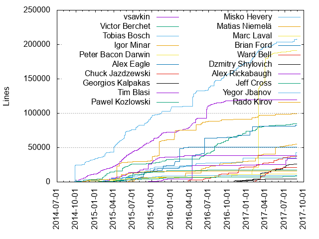
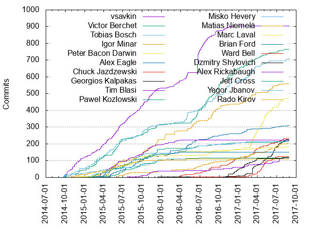

Authors
| Author | Commits (%) | + lines | - lines | First commit | Last commit | Age | Active days | # by commits |
|---|
| vsavkin | 905 (10.78%) | 119775 | 73819 | 2014-09-30 | 2017-02-18 | 871 days, 6:05:25 | 364 | 1 |
| Victor Berchet | 766 (9.13%) | 84692 | 106591 | 2014-09-26 | 2017-08-10 | 1049 days, 9:16:29 | 334 | 2 |
| Tobias Bosch | 712 (8.48%) | 207678 | 170990 | 2014-09-18 | 2017-08-23 | 1069 days, 23:00:59 | 326 | 3 |
| Igor Minar | 558 (6.65%) | 98934 | 85405 | 2015-03-19 | 2017-08-03 | 867 days, 14:46:52 | 195 | 4 |
| Peter Bacon Darwin | 474 (5.65%) | 191050 | 88919 | 2014-12-04 | 2017-08-28 | 998 days, 7:48:22 | 173 | 5 |
| Alex Eagle | 310 (3.69%) | 82308 | 98135 | 2015-02-04 | 2017-08-23 | 930 days, 20:43:23 | 188 | 6 |
| Chuck Jazdzewski | 234 (2.79%) | 37290 | 14907 | 2016-02-17 | 2017-08-16 | 546 days, 0:17:54 | 131 | 7 |
| Georgios Kalpakas | 227 (2.70%) | 26376 | 12383 | 2015-09-11 | 2017-08-12 | 700 days, 5:08:48 | 97 | 8 |
| Tim Blasi | 224 (2.67%) | 38496 | 23532 | 2015-02-17 | 2016-03-31 | 408 days, 2:07:53 | 126 | 9 |
| Pawel Kozlowski | 220 (2.62%) | 8340 | 5709 | 2014-11-27 | 2017-08-18 | 995 days, 6:09:50 | 141 | 10 |
| Misko Hevery | 218 (2.60%) | 42554 | 56415 | 2014-09-19 | 2017-08-24 | 1069 days, 21:54:54 | 127 | 11 |
| Matias Niemelä | 207 (2.47%) | 54713 | 16602 | 2015-02-13 | 2017-08-18 | 916 days, 7:31:52 | 127 | 12 |
| Marc Laval | 182 (2.17%) | 11924 | 5447 | 2014-10-27 | 2017-08-09 | 1017 days, 5:42:45 | 113 | 13 |
| Brian Ford | 152 (1.81%) | 50399 | 19619 | 2015-02-04 | 2016-03-26 | 415 days, 3:02:40 | 83 | 14 |
| Ward Bell | 125 (1.49%) | 21154 | 11098 | 2015-12-10 | 2017-08-15 | 613 days, 18:38:25 | 66 | 15 |
| Dzmitry Shylovich | 118 (1.41%) | 4320 | 1615 | 2016-10-18 | 2017-04-05 | 169 days, 6:26:35 | 62 | 16 |
| Alex Rickabaugh | 117 (1.39%) | 34418 | 24541 | 2015-05-19 | 2017-08-28 | 832 days, 19:05:35 | 74 | 17 |
| Jeff Cross | 116 (1.38%) | 17345 | 12568 | 2015-01-15 | 2016-06-28 | 530 days, 0:41:00 | 71 | 18 |
| Yegor Jbanov | 111 (1.32%) | 9106 | 3558 | 2015-02-05 | 2016-02-17 | 376 days, 21:37:35 | 71 | 19 |
| Rado Kirov | 111 (1.32%) | 15661 | 10397 | 2014-10-28 | 2016-09-24 | 696 days, 16:56:34 | 84 | 20 |
These didn't make it to the top: Martin Probst, Stefanie Fluin, Miško Hevery, Julie Ralph, Kara Erickson, Kara, Rob Wormald, Jason Aden, Kevin Moore, Naomi Black, gdi2290, Jason Teplitz, Olivier Combe, George Kalpakas, Jeremy Elbourn, Caitlin Potter, Vikram Subramanian, Jesus Rodriguez, PatrickJS, Victor Savkin, yjbanov, Pete Bacon Darwin, Miško Hevery, Jacob MacDonald, Joao Dias, Vojta Jina, Ian Riley, mlaval, mgechev, Pascal Precht, Kathy Walrath, Jesús Rodríguez, Yuan Gao, Trotyl Yu, Ted Sander, Brandon Roberts, vikerman, Kapunahele Wong, Hans Larsen, Jason Choi, Filipe Silva, cexbrayat, Suguru Inatomi, Patrice Chalin, Alfonso Presa, Michael Goderbauer, Bowen Ni, Stephen Fluin, Sekib Omazic, Hank Duan, Harry Terkelsen, Hans, laco0416, Chirayu Krishnappa, Andrei Tserakhau, Eric Mendes Dantas, Ciro Nunes, Zhicheng Wang, ScottSWu, Gion Kunz, Gerd Jungbluth, Felix Itzenplitz, Abhimanyu Deora, Yegor, WilliamKoza, Wassim Chegham, Jules Kremer, Jesús Rodríguez, Hannah Howard, Dimitrios Loukadakis, David Herges, Damien Cassan, Brandon, Bertrand Laporte, swseverance, ericmartinezr, Wesley Cho, Thierry Templier, Sigmund Cherem, Shahar Talmi, Sammy Jelin, Sam Rawlins, Robert Messerle, Pouria Alimirzaei, Paul Gschwendtner, Lucas Sloan, Lenny, Dmitriy Shekhovtsov, David Reher, Alex Wolfe, maxime-allex, keertip, gary-b, William KOZA, Vijay Menon, Uri Shaked, Toxicable, Torgeir Helgevold, Tommy Odom, Tim Ruffles, Tero Parviainen, Tamas Csaba, Shefali Sinha, Richard Sentino, Richard Harrington, Olivier Chafik, Nick Van Dyck, Nathan Walker, Michael George Attard, Michael, Matthew Hill, Matan Lurey, Levente Morva, Justin DuJardin, Jesús Rodríguez Rodríguez, James, Foxandxss, Florian Kinder, Dimitri Benin, David Fuka, Christoph Krautz, BeastCode, Austin, André Werlang, Andrei Alecu, Alexander Bachmann, uber5001, tycho01, liufc, kutyel, kurthong, choeller, cameronbriar, bmarkov, William Welling, Vamsi Varikuti, Vamsi V, Timur Meyster, Thomas Shafer, Stepan Suvorov, Shuhei Kagawa, Sarun Rattanasiri, Ryan Cavanaugh, Phong Huynh, Pablo Villoslada Puigcerber, Mike Ryan, Meligy, Matt Greenland, Martin Belev, Mark Amery, Konstantin Shcheglov, Karl Seamon, Kai Ruhnau, João Dias, Josh Thomas, Josh Kurz, Joe, Jesse Palmer, Jason Kurian, Jason Jean, Jason Hodges, Jacob Eggers, JB Nizet, J. Andrew Brassington, Isaac Park, Günter Zöchbauer, Flounn, Florian Knop, Federico Caselli, Fabian Wiles, Fabian Raetz, Evan Martin, Eudes Petonnet-Vincent, David-Emmanuel Divernois, David, Daria Jung, Daniel Leib, Cédric Exbrayat, Craig Hutchison, Craig, Connor Wyatt, Cody Lundquist, Cindy, Brian Yarger, Brian Michalski, Brendan Wyse, Bradley Heinz, Artem Petrosian, Anton Moiseev, Andrew, Aliaksei Kuncevič, Aliaksei Kuncevic, Alex Castillo, Alberto Santini, 雪狼, 执衡, Øystein Lygre, unknown, tinayuangao, sumitknoldus, simon-ramsay, shlomiassaf, shaul almog, rainabba, pocketmax, otodockal, opensrcken, olegdunkan, nickraphael, mikael, michaelgeorgeattard, mgiambalvo, meDavid, matt24ray, lozanol, laiso, kurt, ksvitkovsky, jteplitz, jolly-roger, jnizet, jennyraj, ipinak, hdngr, gistic-guob, gil, gc, gaohailang, flyyang, evan Liu, esagawe, erictsangx, eric, elimach, eggers, domusofsail, dgrove, daydr3am, dapperAuteur, danielcrisp, crisbeto, cjc343, chumtoadafuq, caleb, brianpchsu, asukaleido, aravindfz, alexcastillo, alexbyk, agpreynolds, Zaven Muradyan, Zackary Chapple, Zach Bjornson, Yaroslav Admin, Yang Lin, Wojciech Kwiatek, William Johnson, Will Ngo, Will Howell, Wenqian Guo, Vladislav Zarakovsky, Vivek Ghaisas, Vincent Ogloblinsky, Victor Mejia, Veikko Karsikko, Vanga Sasidhar, Valter Júnior, Utsav Shah, Uli Köhler, Tsuyoshi Ito, Trotyl, Tom Schoener, Tom, Tim Consolazio, Tim Blair, Thomas Pink, Thomas Henley, Thomas Grainger, The Gitter Badger, Thanesh Rajandran, Tea, Steve Sewell, Steve Mao, Stephen Adams, Stepan, Stanimira Vlaeva, Stacy Gay, Souvik Basu, Simon Hürlimann (CyT), Shlomi Assaf, Shai Reznik, Sergey Shevchenko, Sebastián Duque, Sebastian Müller, Sebastian Hillig, Scotty Waggoner, Scott Hatcher, Sarah, Santi, Sam Verschueren, Sam Lin, Sam Julien, Sam Herrmann, Roy Ling, Rodolfo Yabut, Roberto Simonetti, Robert Spier, Robert Ferentz, Rob Richardson, Richard Kho, Rene Weber, Razvan Moraru, Randall Koutnik, Rakhat Jabagin, Rafael, Prayag Verma, Prashant Andani, Prasanth Vaaheeswaran, Prakal, Poy Chang, Pouja, Polvista, Phillip Alexander, Philippe MARTIN, Philip Harrison, Pete Mertz, Pete Boere, Pedro Abreu, Paul A. Trzyna, Patrick, Panuruj Khambanonda (PK), Octavian Lari, Nuno Arruda, Ning Xia, Nikita Shiryakov, Nicola Sanitate, Nick Mann, Nicholas Hydock, Natalie Sidhom, NFM, Mohamed Hegazy, Minko Gechev, Mike Brocchi, Mike, Mikael Morlund, Michał Gołębiowski, Michael Seemann, Michael Mrowetz, Michael Giambalvo, Melinda Sarnicki Bernardo, Maxime Robert, Matthew Windwer, Matthew Schranz, Matthew Hegarty, Matteo Suppo, Matt Wheatley, Matt Follett, Matias Niemelä, Mathou54, Mathias Raacke, Mark Ethan Trostler, Marek Buko, Marcus Krahl, Marc Fisher, Maarten Tibau, Lukas Ruebbelke, Luka Pejovic, LongYinan, Lina Lu, Leo Gallucci, Lars Gyrup Brink Nielsen, Kim Burgess, Kevin-K, Kevin Western, Kevin Merckx, Kevin Kirsche, Kevin Huang, Kevin Cooper, Ketan Gote, Kasidit Iamthong, Jónatan Núñez, Justin James, Julien Elbaz, Julian Motz, José Nicodemos Maia Neto, José Antonio Chio, Josh Olson, Josh Gerdes, Josh Brown, Josep Sayol, Josef Meier, Jorge Cruz, Joost de Vries, Jonathan Miles, Jonathan Adamski, Jon Walsh, Jon, John-David Dalton, John Lindquist, John Jelinek IV, John Arstingstall, John Anthony, Joel Brewer, Jimmy Gong, Jesper Rønn-Jensen, Jerome Velociter, Jeremy Wilken, Jeremy Attali, Jennifer Bland, Jay Phelps, Jay Kan, Javier Ros, Javier Revillas, Janne Vanhala, Jan Peer Stöcklmair, Jan Kuri, James Ward, James Blacklock, Jake Garelick, Jacob Richman, Jack Sun, Ivo Gabe de Wolff, Ivan Gabriele, Itay Radotzki, Itamar, Isaac Brown, Idir Ouhab Meskine, Hornyák Bence, Hongbo Miao, Hiroto Fukui, Henry Wong, Henrique Limas, Harry Wolff, Grégory Bataille, Gerard Sans, Georgii Dolzhykov, Gautam krishna.R, GabrielBico, Gabriel Nicolas Avellaneda, Gabe Scholz, Gabe Johnson, FrozenPandaz, Frederik Prijck, FerhatE, Ferhat, Ferdinand Malcher, Felix Yan, Felipe Batista, Fahimnur Alam, Ethan Veres, Essam Al Joubori, Eric Lee Carraway, Eric Jimenez, Emanuel Hein, Elliott Davis, Edouard Coissy, Edd Hannay, Ed Pelc, Dylan Johnson, Drew Moore, Douglas Duteil, Don Denton, Dmytro Kulyk, Dmitry Zamula, Dmitry Patsura, Dima Kuzmich, Diego Barahona, Derek Van Dyke, Davy Engone, David Purpura, David Pertiller, David East, David Brooks, Daniel Rasmuson, Daniel Kucal, Daniel Bunte, Daniel, Dan Lipsitt, Cyrille Tuzi, Cuel, Craig Doremus, Cory Bateman, CorvusCorrax, Constantin Gavrilete, Cole R Lawrence, Cody-Nicholson, Codebacca, Christoph Guttandin, Chris McKnight, Chau (Joe) Nguyen, Chase, CJ Avilla, Bryce Johnson, Bruno da Silva joão, Bruno Trigueiro, Brady Isom, Bradford C. Smith, Borys Semerenko, Bob Nystrom, Blake La Pierre, Ben Elliott, Basarat Ali Syed, Barna Tóth, Aziz Abbas, Austin Miller, Austin McDaniel, Artur Meyster, Antoine Mary, Anthony Zotti, Anthony Van de Gejuchte, Ansel Rosenberg, Andy Howell, Andy, Andrii Nechytailov, Andrew Mitchell, Andreas Wissel, Andreas Argelius, Alxandr, Aliaksei Palkanau, Alexey Toksarov, Alex Xu, Alejandro Caravaca Puchades, Alec Wiseman, Alan Agius, Ajay Ambre, Adrien Boullé, Adol1111, Adil MOURAHI, Adam Bradley, Adam, Aaron Hoffman, Aaron (Ron) Tsui
Only top 20 authors shown
Only top 20 authors shown
| Month | Author | Commits (%) | Next top 5 | Number of authors |
|---|
| 2017-08 | Olivier Combe | 18 (11.84% of 152) | Tobias Bosch, Georgios Kalpakas, Chuck Jazdzewski, Matias Niemelä, Victor Berchet | 48 |
| 2017-07 | Peter Bacon Darwin | 46 (18.85% of 244) | Georgios Kalpakas, Alex Rickabaugh, Chuck Jazdzewski, Victor Berchet, Matias Niemelä | 68 |
| 2017-06 | Georgios Kalpakas | 58 (21.01% of 276) | Peter Bacon Darwin, Igor Minar, Matias Niemelä, Ward Bell, Yuan Gao | 44 |
| 2017-05 | Peter Bacon Darwin | 52 (19.40% of 268) | Georgios Kalpakas, Ward Bell, Igor Minar, Matias Niemelä, Tobias Bosch | 38 |
| 2017-04 | Peter Bacon Darwin | 61 (19.93% of 306) | Ward Bell, Stefanie Fluin, Georgios Kalpakas, Victor Berchet, Tobias Bosch | 44 |
| 2017-03 | Peter Bacon Darwin | 89 (20.00% of 445) | Chuck Jazdzewski, Tobias Bosch, Georgios Kalpakas, Igor Minar, Dzmitry Shylovich | 49 |
| 2017-02 | Tobias Bosch | 35 (15.09% of 232) | Igor Minar, Georgios Kalpakas, Victor Berchet, Peter Bacon Darwin, Ward Bell | 30 |
| 2017-01 | Victor Berchet | 22 (12.72% of 173) | Dzmitry Shylovich, Alex Eagle, Igor Minar, Tobias Bosch, Peter Bacon Darwin | 45 |
| 2016-12 | Victor Berchet | 41 (20.71% of 198) | Dzmitry Shylovich, Chuck Jazdzewski, Tobias Bosch, Matias Niemelä, Alex Rickabaugh | 45 |
| 2016-11 | Tobias Bosch | 48 (24.74% of 194) | Victor Berchet, Chuck Jazdzewski, Dzmitry Shylovich, vsavkin, Peter Bacon Darwin | 34 |
| 2016-10 | Victor Berchet | 40 (20.30% of 197) | Tobias Bosch, Igor Minar, Joao Dias, vsavkin, Chuck Jazdzewski | 47 |
| 2016-09 | Victor Berchet | 55 (23.21% of 237) | Igor Minar, Tobias Bosch, vsavkin, Kara, Marc Laval | 43 |
| 2016-08 | Victor Berchet | 42 (12.50% of 336) | Igor Minar, vsavkin, Tobias Bosch, Chuck Jazdzewski, Kara | 50 |
| 2016-07 | vsavkin | 55 (24.77% of 222) | Victor Berchet, Tobias Bosch, Chuck Jazdzewski, Kara, Matias Niemelä | 40 |
| 2016-06 | vsavkin | 108 (28.27% of 382) | Victor Berchet, Kara Erickson, Igor Minar, Tobias Bosch, Matias Niemelä | 51 |
| 2016-05 | vsavkin | 46 (18.18% of 253) | Igor Minar, Tobias Bosch, Alex Eagle, Victor Berchet, Martin Probst | 54 |
| 2016-04 | Tobias Bosch | 33 (18.64% of 177) | vsavkin, Alex Eagle, Kara Erickson, Misko Hevery, Martin Probst | 48 |
| 2016-03 | vsavkin | 29 (18.71% of 155) | Igor Minar, Tim Blasi, Chuck Jazdzewski, Peter Bacon Darwin, Misko Hevery | 46 |
| 2016-02 | Alex Eagle | 27 (20.77% of 130) | vsavkin, Peter Bacon Darwin, Tobias Bosch, Matias Niemelä, Tim Blasi | 34 |
| 2016-01 | Igor Minar | 31 (23.31% of 133) | Tim Blasi, Alex Eagle, Yegor Jbanov, Tobias Bosch, Pawel Kozlowski | 51 |
| 2015-12 | Igor Minar | 36 (15.13% of 238) | Pawel Kozlowski, Victor Berchet, vsavkin, Jeff Cross, Rob Wormald | 54 |
| 2015-11 | vsavkin | 46 (20.63% of 223) | Igor Minar, Yegor Jbanov, Tim Blasi, Pawel Kozlowski, Alex Rickabaugh | 37 |
| 2015-10 | Tobias Bosch | 41 (12.06% of 340) | vsavkin, Tim Blasi, Victor Berchet, Igor Minar, Alex Eagle | 49 |
| 2015-09 | vsavkin | 38 (11.55% of 329) | Igor Minar, Brian Ford, Jeff Cross, Marc Laval, Tobias Bosch | 70 |
| 2015-08 | Misko Hevery | 31 (12.16% of 255) | vsavkin, Brian Ford, Pawel Kozlowski, Marc Laval, Victor Berchet | 44 |
| 2015-07 | vsavkin | 45 (13.85% of 325) | Peter Bacon Darwin, Alex Eagle, Tobias Bosch, Tim Blasi, Pawel Kozlowski | 47 |
| 2015-06 | Victor Berchet | 55 (14.59% of 377) | vsavkin, Tobias Bosch, Martin Probst, Tim Blasi, Jeff Cross | 39 |
| 2015-05 | vsavkin | 40 (9.39% of 426) | Igor Minar, Victor Berchet, Peter Bacon Darwin, Tobias Bosch, Brian Ford | 44 |
| 2015-04 | Igor Minar | 39 (12.00% of 325) | Tobias Bosch, vsavkin, Alex Eagle, Tim Blasi, Yegor Jbanov | 42 |
| 2015-03 | vsavkin | 34 (15.18% of 224) | Victor Berchet, Tim Blasi, Tobias Bosch, Marc Laval, Peter Bacon Darwin | 38 |
| 2015-02 | Tobias Bosch | 33 (16.50% of 200) | vsavkin, Victor Berchet, Yegor Jbanov, Pawel Kozlowski, Tim Blasi | 27 |
| 2015-01 | Victor Berchet | 20 (19.23% of 104) | Tobias Bosch, vsavkin, Rado Kirov, Misko Hevery, gdi2290 | 20 |
| 2014-12 | vsavkin | 27 (30.68% of 88) | Victor Berchet, Tobias Bosch, Rado Kirov, Peter Bacon Darwin, Misko Hevery | 10 |
| 2014-11 | vsavkin | 46 (48.42% of 95) | Tobias Bosch, Vojta Jina, Rado Kirov, Victor Berchet, Tommy Odom | 14 |
| 2014-10 | vsavkin | 46 (48.42% of 95) | Victor Berchet, Vojta Jina, Misko Hevery, Chirayu Krishnappa, Tobias Bosch | 10 |
| 2014-09 | Tobias Bosch | 17 (44.74% of 38) | Misko Hevery, Victor Berchet, vsavkin, Vojta Jina, Miško Hevery | 7 |
| Year | Author | Commits (%) | Next top 5 | Number of authors |
|---|
| 2017 | Peter Bacon Darwin | 305 (14.55% of 2096) | Georgios Kalpakas, Tobias Bosch, Ward Bell, Chuck Jazdzewski, Igor Minar | 179 |
| 2016 | vsavkin | 372 (14.23% of 2614) | Victor Berchet, Tobias Bosch, Igor Minar, Alex Eagle, Chuck Jazdzewski | 281 |
| 2015 | vsavkin | 411 (12.21% of 3366) | Victor Berchet, Tobias Bosch, Igor Minar, Tim Blasi, Pawel Kozlowski | 198 |
| 2014 | vsavkin | 121 (38.29% of 316) | Tobias Bosch, Victor Berchet, Misko Hevery, Vojta Jina, Rado Kirov | 21 |
| Domains | Total (%) |
|---|
| gmail.com | 3283 (39.12%) |
|---|
| google.com | 1384 (16.49%) |
|---|
| suumit.com | 766 (9.13%) |
|---|
| bacondarwin.com | 502 (5.98%) |
|---|
| angularjs.org | 489 (5.83%) |
|---|
| hevery.com | 326 (3.88%) |
|---|
| users.noreply.github.com | 221 (2.63%) |
|---|
| yearofmoo.com | 208 (2.48%) |
|---|
| amadeus.com | 208 (2.48%) |
|---|
| umich.edu | 152 (1.81%) |
|---|